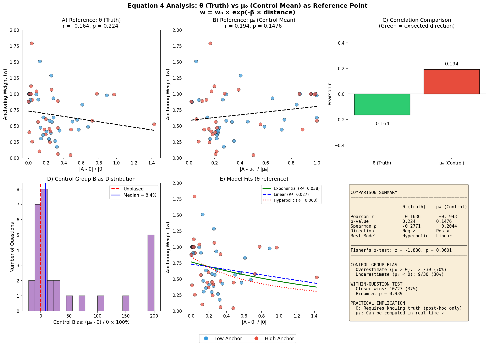

🔬 Equation 4 Analysis
θ (Truth) vs μ₀ (Control Mean) as Reference
The Anchoring Model
w = w₀ × exp(-β × distance)
- θ reference: distance = |Anchor - Truth| (B-L original)
- μ₀ reference: distance = |Anchor - Control Mean| (Our alternative)
Practical advantage: μ₀ can be computed without knowing the truth!
Comparison Results
| Reference | Pearson r | p-value | Direction |
|---|---|---|---|
| θ (Truth) | -0.1636 | 0.224 | Negative ✓ |
| μ₀ (Control Mean) | +0.1943 | 0.1476 | Positive ✗ |
Visualization
